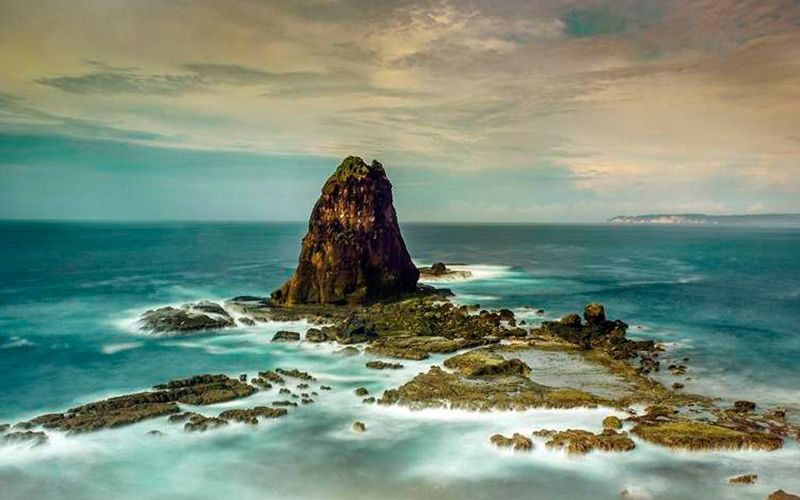
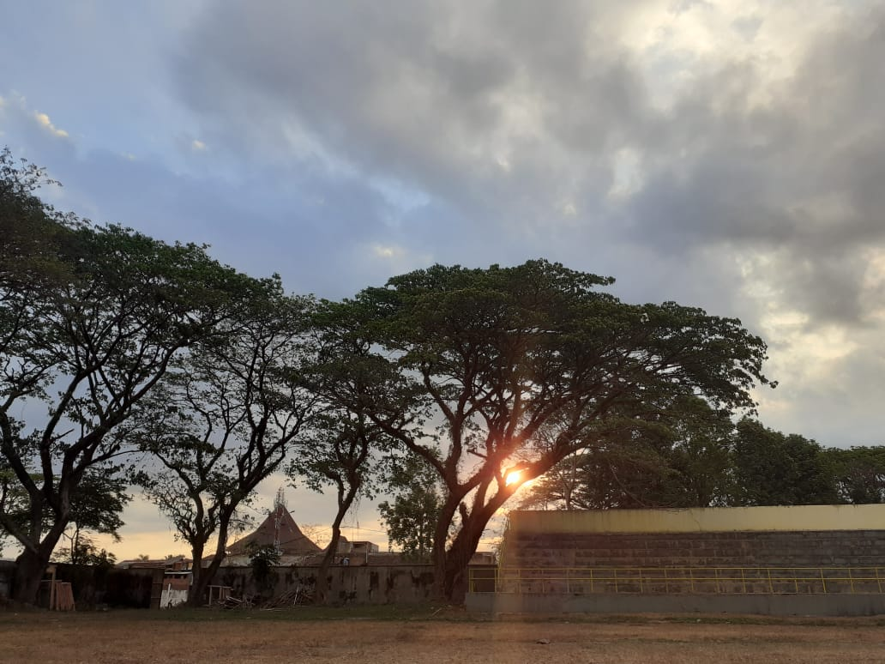
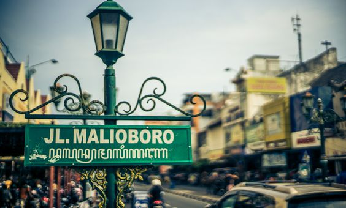

| ViewTour BLOG |
| Berbagi Cerita Travelling yang Menyenangkan |
|  |
Papuma yang Dulu Hanyalah Sekedar Angan Masa pandemi corona merupakan masa yang paling suntuk yang pernah kualami. Sebagai seseorang dengan jiwa traveling yang kuat, mengurung diri di rumah merupakan petaka tersendiri bagi jiwa dan otakku. Yang tersisa hanya tas packing berukuran besar teronggok tak berdaya di pojok kamar tanpa pernah kusentuh dalam kurun waktu kurang lebih tiga bulan, cukup membuat tas itu terlihat sedikit berdebu dan agak berjamur. |
|  |
Pojokan Jember Tidak banyak video yang dapat kutemukan, karena daerah ini tidak sepopuler tempat lainnya seperti bali atau Jogjakarta. Travelingku yang dulu juga hanya menyisakan kenangan berupa foto – foto saja karena liburan itu kulakukan ketika aku masih baru memulai perjalanan. |
|  |
Ketenangan di Balik Riuh Kota Jogja Angkringan masih berjejer meski tak sebanyak dulu. Aku menyempatkan diri menikmati segelas kopi selagi tour guide kami belum kembali untuk memberi jadwal destinasi wisata selanjutnya. Malam yang begitu ramai di jalan Malioboro dengan gemerlap lampu toko di samping merupakan ketengangan tersendiri bagiku. |